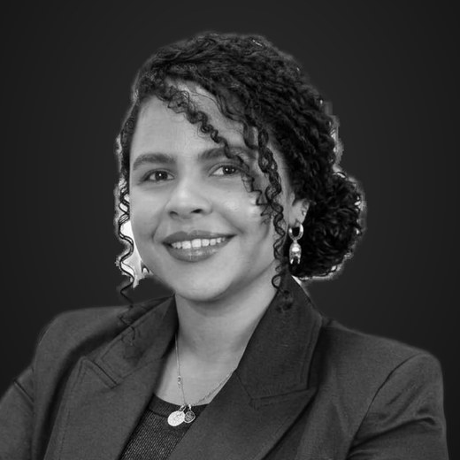

Nosotros
Un equipo pequeño y cercano: dirección profesional con asistentes consultoras en Santiago y Puerto Montt, para acompañar a cada cliente en terreno y a distancia.
Enrique Castillo
Director / Consultor
Puerto Varas – Puerto Montt, Chile
Contador Auditor y MBA. Más de 20 años de trayectoria en administración, finanzas, tributación y gestión laboral, en empresas de distintos sectores y países. Dirige el diagnóstico y la estrategia de cada cliente y supervisa cada entregable del Estudio.

Cecilia Jemmott
Asistente Consultor
Santiago, Chile
Licenciada en Administración de Empresas y Técnico Superior en Hotelería y Hospitalidad. Experiencia en administración y operaciones de hotelería internacional, turismo y restaurantes: facturación y cobranza, conciliación bancaria, control de pagos y comisiones de medios de pago, reservas y atención de clientes. Aporta al Estudio el control administrativo y financiero de negocios gastronómicos y de servicios, con dominio de sistemas de gestión hotelera y CRM.

Macarena Sazo
Asistente Consultor
Puerto Montt, Chile
Enfermera universitaria, con diplomados en gestión y docencia y formación en control de infecciones, bioseguridad, calidad y trato al usuario, y gestión de personas. Aporta al Estudio la mirada sanitaria: revisión en terreno de los Manuales de Buenas Prácticas de los locales de alimentos, verificación de sus programas y registros según la frecuencia comprometida (limpieza y sanitización, control de plagas, temperaturas, higiene del personal, capacitaciones) y preparación de los locales para las fiscalizaciones de la SEREMI de Salud.